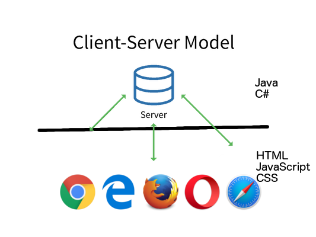

Your browser doesn't support the features required by impress.js, so you are presented with a simplified version
of this presentation.
For the best experience please use the latest Chrome, Safari or Firefox browser.
*Use arrow keys to navigate between slides
V Keerti Kotaru
- Microsoft MVP
-
- Author of Material Design Implementation Using AngularJS
-
- Organizer of ngHyderabad Meetup group.
-
-
Twitter @keertikotaru | Blogs at bit.ly/kotaru
V Keerti Kotaru, author of
Needed Software
- Visual Studio Code
-
- NPM - Node Package Manager
-
- Serve
-
- JSON Server
-
- Angular CLI
-
Client-Server
Web application development and JavaScript changed overtime.
Client-Server
Where does it run?
Client-Server

Web application development and JavaScript changed overtime.
Basics of
JavaScript
JavaScript is a loosely typed dynamic language.
Types are determined automatically while running the script.
Data Types in JavaScript
Primitives:
- Boolean
-
- Null
-
- Undefined
-
- Number
-
- String
-
and... Object
JavaScript Basics
- Objects
-
- Functions
-
- Function Callbacks
-
- Anonymous Function
-
- Asynchronous Code (setTimeout)
-
- Promise
-
- Controlling scope of a variable / Self executing function
-
ES6 / ES2015
- Arrow Functions
-
- Modules
-
- var/let/const
-
- Spread Operator)
-
Typescript
- Microsoft open source project
-
- Class
-
- Interface
-
- Data Types
-
- Function parameters
-
- Function return types
-
Angular 1x
- Data Binding
-
- Controller
-
- Iterate a list (ng-repeat)
-
- Service/Factory
-
- HTTP API
-
- Single Page Application
MVC and Pitfalls
- Model could be updated many ways
-
- Component approach is better
-
Angular 2
- Data bindings
-
- Components
-
- List(*ngFor)
-
- Providers
-
- Http
-
- RxJS
-
- Routing
Q & A
Thank you
Twitter @keertikotaru
|
|